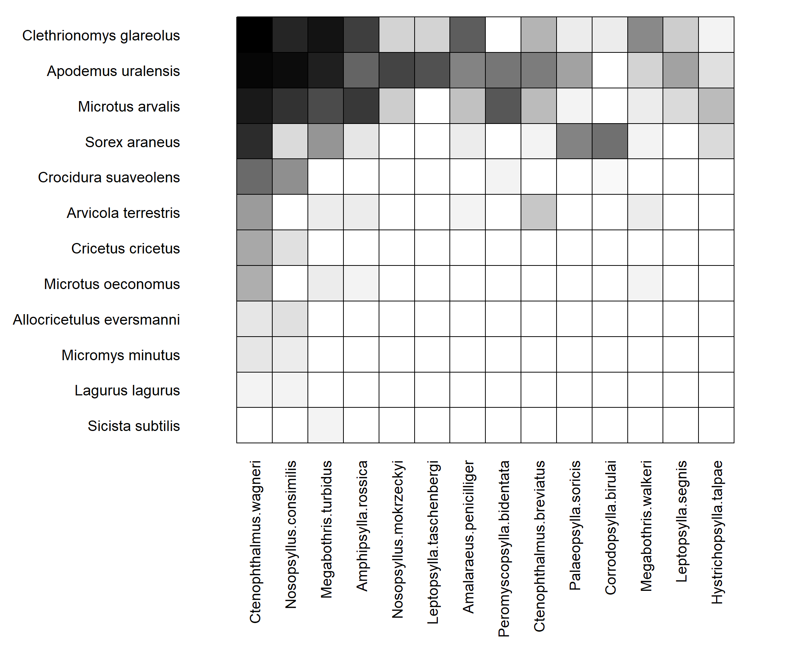

Last updated: 2021-04-10
Checks: 7 0
Knit directory: Networks_HW_S2021/
This reproducible R Markdown analysis was created with workflowr (version 1.6.2). The Checks tab describes the reproducibility checks that were applied when the results were created. The Past versions tab lists the development history.
Great! Since the R Markdown file has been committed to the Git repository, you know the exact version of the code that produced these results.
Great job! The global environment was empty. Objects defined in the global environment can affect the analysis in your R Markdown file in unknown ways. For reproduciblity it’s best to always run the code in an empty environment.
The command set.seed(20210409) was run prior to running the code in the R Markdown file. Setting a seed ensures that any results that rely on randomness, e.g. subsampling or permutations, are reproducible.
Great job! Recording the operating system, R version, and package versions is critical for reproducibility.
Nice! There were no cached chunks for this analysis, so you can be confident that you successfully produced the results during this run.
Great job! Using relative paths to the files within your workflowr project makes it easier to run your code on other machines.
Great! You are using Git for version control. Tracking code development and connecting the code version to the results is critical for reproducibility.
The results in this page were generated with repository version e020904. See the Past versions tab to see a history of the changes made to the R Markdown and HTML files.
Note that you need to be careful to ensure that all relevant files for the analysis have been committed to Git prior to generating the results (you can use wflow_publish or wflow_git_commit). workflowr only checks the R Markdown file, but you know if there are other scripts or data files that it depends on. Below is the status of the Git repository when the results were generated:
Ignored files:
Ignored: .Rproj.user/
Untracked files:
Untracked: data/Chesapeake_bay_links.csv
Untracked: data/Chesapeake_bay_nodes.csv
Untracked: data/Dunne2013PBioSupData.xlsx
Untracked: data/M_PA_003.csv
Untracked: data/Otago_Data_Links.csv
Untracked: data/Otago_Data_Nodes.csv
Untracked: data/Ural_valley_A_HP_048.csv
Untracked: data/vizentin-bugoni_et_al_2016_complementary.xlsx
Untracked: data/~$vizentin-bugoni_et_al_2016_complementary.xlsx
Note that any generated files, e.g. HTML, png, CSS, etc., are not included in this status report because it is ok for generated content to have uncommitted changes.
These are the previous versions of the repository in which changes were made to the R Markdown (analysis/Networks_HW1.Rmd) and HTML (docs/Networks_HW1.html) files. If you’ve configured a remote Git repository (see ?wflow_git_remote), click on the hyperlinks in the table below to view the files as they were in that past version.
| File | Version | Author | Date | Message |
|---|---|---|---|---|
| Rmd | e020904 | KiseokUchicago | 2021-04-10 | resize |
| html | 720f80d | KiseokUchicago | 2021-04-10 | Build site. |
| Rmd | ccd227a | KiseokUchicago | 2021-04-10 | HW1 |
| html | 0020e21 | KiseokUchicago | 2021-04-10 | Build site. |
| Rmd | acdc82b | KiseokUchicago | 2021-04-10 | HW1 |
| html | a70c6a8 | KiseokUchicago | 2021-04-09 | Build site. |
| Rmd | e09905a | KiseokUchicago | 2021-04-09 | HW1 |
Professor: Mercedes Pascual, Sergio A. Alcala Corona
Student: Kiseok Lee
# libraries
library('igraph')
library('bipartite')
library('dplyr')A_u <- matrix(c(0,1,1,0,0, # An example input matrix
1,0,0,1,1,
1,0,0,0,0,
0,1,0,0,0,
0,1,0,0,0),5,5, byrow=F)
isSymmetric(A_u)[1] TRUEg <- igraph::graph.adjacency(A_u, mode = 'undirected')
par(mar=c(0,0,0,0))
plot(g)A_d <- matrix(c(0,1,1,0,1, # An example input matrix
1,0,0,1,1,
1,0,0,0,0,
0,1,0,0,0,
0,1,1,0,0),5,5, byrow=F)
isSymmetric(A_d)[1] FALSEg <- igraph::graph.adjacency(A_d, mode = 'directed')
par(mar=c(0,0,0,0))
plot(g)A_d <- matrix(c(1,1,1,0,1, # An example input matrix
1,0,0,1,1,
1,0,0,0,0,
0,1,0,0,0,
0,1,1,0,0),5,5, byrow=F)
isSymmetric(A_d)[1] FALSEg <- igraph::graph.adjacency(A_d, mode = 'directed')
par(mar=c(0,0,0,0))
plot(g)A_d <- matrix(c(0,1,1,0,1, # An example input matrix
1,0,0,0,1,
1,0,0,0,0,
0,0,0,0,0,
0,1,1,0,0),5,5, byrow=F)
isSymmetric(A_d)[1] FALSEg <- igraph::graph.adjacency(A_d, mode = 'directed')
par(mar=c(0,0,0,0))
plot(g)A_w <- matrix(c(0,1,1,0,0, # An example input matrix
1,0,0,1,1,
1,0,0,0,0,
0,1,0,0,0,
0,1,0,0,0),5,5, byrow=F)
random_weights <- round(rnorm(10, 10, 4),2) # take weights from a normal distribution.
A_w[lower.tri(A_w)] <- A_w[lower.tri(A_w)]*random_weights # Fill the lower traiangle
A_w <- A_w+t(A_w) # This makes the matrix symmetric
isSymmetric(A_w)[1] TRUEg <- igraph::graph.adjacency(A_w, mode = 'undirected', weighted = T)
E(g)$weight[1] 12.02 5.63 9.01 7.57par(mar=c(0,0,0,0))
plot(g, edge.width=E(g)$weight)A_w <- matrix(c(0,1,1,0,0, # An example input matrix
1,0,0,1,1,
0,0,0,0,1,
0,1,1,0,1,
0,1,0,0,0),5,5, byrow=F)
random_weights <- round(rnorm(25, 10, 4),2) # take weights from a normal distribution.
A_w <- A_w*random_weights # Fill the lower traiangle
isSymmetric(A_w)[1] FALSEg <- igraph::graph.adjacency(A_w, mode = 'directed', weighted = T)
E(g)$weight [1] 13.46 10.33 13.68 12.26 10.73 2.72 3.82 11.12 4.69 6.88par(mar=c(0,0,0,0))
plot(g, edge.width=E(g)$weight)# undirected
L_u <- data.frame(i=c(1,1,2,2),
j=c(2,3,4,5))
g <- igraph::graph.data.frame(L_u, directed = F)
par(mar=c(0,0,0,0))
plot(g)# directed
L_u <- data.frame(i=c(1, 1, 2, 2, 2, 3, 3, 4, 5, 5),
j=c(2, 3, 1, 4, 5, 1, 5, 2, 1, 2))
g <- igraph::graph.data.frame(L_u, directed = T)
par(mar=c(0,0,0,0))
plot(g)# undirected
L_u <- data.frame(i=c(1,1,1,2,2),
j=c(1,2,3,4,5))
g <- igraph::graph.data.frame(L_u, directed = F)
par(mar=c(0,0,0,0))
plot(g)# undirected
L_w <- data.frame(i=c(1,1,2,2),
j=c(2,3,4,5),
weight=round(rnorm(4, 10, 4),2) # take weights from a normal distribution.
)
g <- igraph::graph.data.frame(L_w, directed = F)
E(g)$weight[1] 5.01 5.56 4.75 14.13par(mar=c(0,0,0,0))
plot(g, edge.width=E(g)$weight)# directed
L_wd <- data.frame(from=c(1, 1, 2, 2, 2, 3, 3, 4, 5, 5),
to=c(2, 3, 1, 4, 5, 1, 5, 2, 1, 2),
weight=round(rnorm(10, 1, 0.2),2))
g <- igraph::graph.data.frame(L_wd, directed = T)
gIGRAPH e95eb82 DNW- 5 10 --
+ attr: name (v/c), weight (e/n)
+ edges from e95eb82 (vertex names):
[1] 1->2 1->3 2->1 2->4 2->5 3->1 3->5 4->2 5->1 5->2E(g)$weight [1] 1.12 0.86 1.19 1.04 1.10 0.83 1.25 0.84 1.22 0.79par(mar=c(0,0,0,0))
plot(g, edge.width=log(E(g)$weight)*10, # possible to rescale edge weights when plotting
edge.arrow.size=1.2,
edge.curved=0.5,
edge.color='black')Advantages: more direct and intuitive (only when having a small number of edges) Disadvantages: cannot use matrix operations. not good when there are many number of edges
A_w [,1] [,2] [,3] [,4] [,5]
[1,] 0.00 13.46 0.00 0.00 0.00
[2,] 10.33 0.00 0.00 13.68 12.26
[3,] 10.73 0.00 0.00 2.72 0.00
[4,] 0.00 3.82 0.00 0.00 0.00
[5,] 0.00 11.12 4.69 6.88 0.00g <- igraph::graph.adjacency(A_w, mode = 'directed', weighted = T)
L <- igraph::as_data_frame(g, what = 'edges')
L from to weight
1 1 2 13.46
2 2 1 10.33
3 2 4 13.68
4 2 5 12.26
5 3 1 10.73
6 3 4 2.72
7 4 2 3.82
8 5 2 11.12
9 5 3 4.69
10 5 4 6.88g <- igraph::graph.data.frame(L_wd, directed = T)
A <- igraph::as_adjacency_matrix(g, attr = 'weight', sparse=F)
A 1 2 3 4 5
1 0.00 1.12 0.86 0.00 0.00
2 1.19 0.00 0.00 1.04 1.10
3 0.83 0.00 0.00 0.00 1.25
4 0.00 0.84 0.00 0.00 0.00
5 1.22 0.79 0.00 0.00 0.00matrix_to_edge_list <- function(A){
# is it symmetric?
if (isSymmetric(A)){
g <- igraph::graph.adjacency(A, mode = 'undirected', weighted = T)
L <- igraph::as_data_frame(g, what = 'edges')
return(L)
} else{
g <- igraph::graph.adjacency(A, mode = 'directed', weighted = T)
L <- igraph::as_data_frame(g, what = 'edges')
return(L)
}
}
matrix_to_edge_list(A_w) from to weight
1 1 2 13.46
2 2 1 10.33
3 2 4 13.68
4 2 5 12.26
5 3 1 10.73
6 3 4 2.72
7 4 2 3.82
8 5 2 11.12
9 5 3 4.69
10 5 4 6.88matrix_to_edge_list(A_d) from to weight
1 1 2 1
2 1 3 1
3 2 1 1
4 2 5 1
5 3 1 1
6 3 5 1
7 5 1 1
8 5 2 1matrix_to_edge_list(A_u) from to weight
1 1 2 1
2 1 3 1
3 2 4 1
4 2 5 1edge_list_to_matrix_list <- function(L_w){
g <- igraph::graph.data.frame(L_w, directed = T)
A <- igraph::as_adjacency_matrix(g, attr = 'weight', sparse=F)
# make it symmetric if it is undirected
if (all(A[lower.tri(A)]==0)){
A <- A+t(A)
return(A)
}else{ # when directed
return(A)
}
}
edge_list_to_matrix_list(L_w) 1 2 3 4 5
1 0.00 5.01 5.56 0.00 0.00
2 5.01 0.00 0.00 4.75 14.13
3 5.56 0.00 0.00 0.00 0.00
4 0.00 4.75 0.00 0.00 0.00
5 0.00 14.13 0.00 0.00 0.00edge_list_to_matrix_list(L_wd) 1 2 3 4 5
1 0.00 1.12 0.86 0.00 0.00
2 1.19 0.00 0.00 1.04 1.10
3 0.83 0.00 0.00 0.00 1.25
4 0.00 0.84 0.00 0.00 0.00
5 1.22 0.79 0.00 0.00 0.00data("memmott1999") # load
class(memmott1999)[1] "matrix" "array" memmott1999[1:4,1:4] # view first lines Coleoptera.spec1 Coleoptera.spec2 Coleoptera.spec3
Agrimonium.eupatorium 0 0 0
Leontodon.autumnalis 0 0 0
Lotus.corniculatus 0 0 0
Medicago.lupulina 0 0 0
Coleoptera.spec4
Agrimonium.eupatorium 0
Leontodon.autumnalis 0
Lotus.corniculatus 0
Medicago.lupulina 0We can find other database information in bipartite package manual. https://cran.r-project.org/web/packages/bipartite/bipartite.pdf
For example,
data("elberling1999")
class(elberling1999)[1] "matrix" "array" elberling1999[1:4,1:4] # view first lines Phytomyza.aquilonia Alliopsis.glacialis Botanophilia.bidens
Arabis.alpina 0 0 0
Astragalus.alpinus 0 0 0
Bartsia.alpina 0 0 0
Cassiope.hypniodes 0 0 0
Delai.piliventris
Arabis.alpina 0
Astragalus.alpinus 0
Bartsia.alpina 0
Cassiope.hypniodes 0visweb(memmott1999)# binary
memmott1999_binary <- 1*(memmott1999>0)
visweb(memmott1999_binary)visweb(memmott1999,prednames = F, prey.lablength = 10)plotweb(memmott1999)Can’t really see in detail.
plotweb(memmott1999,y.width.low=0.05, y.width.high=0.1, method="normal",
add=TRUE, low.y=2.95, high.y=3.95, col.low="green", text.low.col="black",
low.lab.dis=0, arrow="down", adj.low=c(0.5,1.1), low.lablength=4)Error in strheight(colnames(web)[1], cex = 0.6): plot.new has not been called yetural_data <- read.csv('data/Ural_valley_A_HP_048.csv')
ural_data[1:4,1:4] X Num..of.hosts.sampled Ctenophthalmus.wagneri
1 Clethrionomys glareolus 5209 1748
2 Apodemus uralensis 15198 1408
3 Microtus arvalis 1920 494
4 Sorex araneus 856 237
Nosopsyllus.consimilis
1 337
2 893
3 193
4 6The first column is species names and the second is the number of hosts sampled, and the rest of the columns are the parasites. Columns 1 and 2 are not part of the network itself. So we will put the hosts as the row names and remove the number of hosts sampled. We also want the data as a matrix, rather than a data frame.
rownames(ural_data) <- ural_data[,1] # Set row names
num_hosts_sampled <- ural_data[,2] # save in a variable
ural_data <- ural_data[,-2] # remove column
dim(ural_data)[1] 12 15ural_data <- ural_data[,-1] # remove column
dim(ural_data)[1] 12 14# head(ural_data)
# convert to matrix
ural_data <- data.matrix(ural_data) # Transform to a matrix format
# head(ural_data)visweb(ural_data)
plotweb(ural_data)plant_species <- rownames(memmott1999)
flower_visitor_species <- colnames(memmott1999)
# head(plant_species, 3)
# head(flower_visitor_species, 3)https://esapubs.org/archive/ Can’t locate the metadata file.
otago_nodes <- read.csv('data/Otago_Data_Nodes.csv')
otago_links <- read.csv('data/Otago_Data_Links.csv')
# head(otago_nodes)
# head(otago_links)# import to igraph
otago_web <- graph.data.frame(otago_links, vertices = otago_nodes, directed = T)
names(edge.attributes(otago_web)) [1] "ConsumerSpeciesID" "ResourceSpeciesID"
[3] "ConsumerSpecies.StageID" "ResourceSpecies.StageID"
[5] "LinkTypeID" "LinkType"
[7] "LinkEvidence" "LinkEvidenceNotes"
[9] "LinkFrequency" "LinkN"
[11] "DietFraction" "ConsumptionRate"
[13] "VectorFrom" "PreyFrom" unique(E(otago_web)$LinkType) [1] "Predation"
[2] "Parasitic Castration"
[3] "Macroparasitism"
[4] "Commensalism"
[5] "Trophically Transmitted Parasitism"
[6] "Concomitant Predation on Symbionts"
[7] "Trophic Transmission"
[8] "Predation on free-living non-feeding stages"
[9] "Predation on commensal non-feeding stages"
[10] "Parasite intraguild trophic interaction" names(vertex.attributes(otago_web)) [1] "name" "SpeciesID"
[3] "StageID" "Stage"
[5] "Species.StageID" "WorkingName"
[7] "OrganismalGroup" "NodeType"
[9] "Resolution" "ResolutionNotes"
[11] "Feeding" "Lifestyle.stage."
[13] "Lifestyle.species." "ConsumerStrategy.stage."
[15] "System" "HabitatAffiliation"
[17] "Mobility" "Residency"
[19] "NativeStatus" "BodySize.g."
[21] "BodySizeEstimation" "BodySizeNotes"
[23] "BodySizeN" "Biomass.kg.ha."
[25] "BiomassEstimation" "BiomassNotes"
[27] "Kingdom" "Phylum"
[29] "Subphylum" "Superclass"
[31] "Class" "Subclass"
[33] "Order" "Suborder"
[35] "Infraorder" "Superfamily"
[37] "Family" "Genus"
[39] "SpecificEpithet" "Subspecies"
[41] "NodeNotes" # head(unique(V(otago_web)$name))https://datadryad.org/stash/dataset/doi:10.5061/dryad.b8r5c
Bahia_Falsa_metadata <- openxlsx::read.xlsx('data/Dunne2013PBioSupData.xlsx',sheet=3)
# head(Bahia_Falsa_metadata)par(mar=c(0,0,0,0)) #Reduce margin size
plot(otago_web)# tweaks
plot(otago_web, vertex.size=3, edge.arrow.size=0.4, vertex.label=NA, layout=layout.circle)Now, let’s try to both set link attributes and use them for plotting. We will color edges by the type of interactin they represent:
E(otago_web)$color <- "grey" # First, we set a default color
E(otago_web)[otago_links$LinkType == 'Predation']$color <- "black"
E(otago_web)[otago_links$LinkType == 'Macroparasitism']$color <- "blue"
E(otago_web)[otago_links$LinkType == 'Trophic Transmission']$color <- "red"
# Now plot
par(mar=c(0,0,0,0))
plot(otago_web, vertex.size=2, edge.arrow.size=0.2, vertex.label=NA, layout=layout.circle)In food webs, species can be divided into three main trophic groups: basal, intermediate and top predators. Let’s try to classify the species on the Otago food web.
# Basal species (those that do not consume) -- do not have incoming links
basal <- which(igraph::degree(otago_web, mode = 'in') == 0)
# Top species do not have outgoing links
top <- which(igraph::degree(otago_web, mode = 'out') == 0)
# Intermediate are all the rest
interm <- V(otago_web)[which(!V(otago_web) %in% c(basal,top))]
# Are all the nodes included?
all(c(basal,top,interm) %in% V(otago_web))[1] TRUEall(V(otago_web) %in% c(basal,top,interm))[1] TRUENow let’s try to re-plot the food web using these classifications. We will use our own layout, which is a matrix with coordinates.
V(otago_web)$troph_pos <- rep(0,length(V(otago_web)))
V(otago_web)$troph_pos[which(V(otago_web)$name %in% basal)] <- 1
V(otago_web)$troph_pos[which(V(otago_web)$name %in% top)] <- 3
V(otago_web)$troph_pos[which(V(otago_web)$name %in% interm)] <- 2
# create a matrix forthe layout coordinates.
coords <- matrix(nrow=length(V(otago_web)), ncol=2) #
# The x positions are randomly selected
coords[,1] <- runif(length(V(otago_web)))
# The y positions are the trophoc positions
coords[,2] <- V(otago_web)$troph_pos
par(mar=c(0,0,0,0))
plot(otago_web,layout=coords,
vertex.color=V(otago_web)$troph_pos,
vertex.label=NA,
vertex.size=8,
edge.color='black',
edge.arrow.size=.3,
edge.width=.5)Org_vec <- unique(otago_nodes$OrganismalGroup)
Col_vec <- c(
"#5F7FC7", "orange", "#AD6F3B", "#673770",
"#D14285", "#652926", "#C84248", "#8569D5", "#5E738F",
"#D1A33D", "#8A7C64", "#599861","#616163", "#FFCDB2",
"#6D9F71", "#242F40",
"#CCA43B", "#F92A82", "#ED7B84", "#7EB77F",
"#DEC4A1", "#E5D1D0", '#0E8482', '#C9DAEA', '#337357',
'#95C623', '#E55812', '#04471C', '#F2D7EE', '#D3BCC0',
'#A5668B', '#69306D', '#0E103D', '#1A535C', '#4ECDC4',
'#F7FFF7', '#FF6B6B', '#FFE66D', '#6699CC', '#FFF275',
'#FF8C42', '#FF3C38', '#A23E48', '#000000', '#CF5C36',
'#EEE5E9', '#7C7C7C', '#EFC88B', '#2E5266', '#6E8898',
'#9FB1BC', '#D3D0CB', '#E2C044', '#5BC0EB', '#FDE74C',
'#9BC53D', '#E55934', '#FA7921', "#CD9BCD", "#508578", "#DA5724")
V(otago_web)$color <- "grey" # First, we set a default color
# assign color to nodes
for (i in 1:length(Org_vec)){
V(otago_web)[otago_nodes$OrganismalGroup == Org_vec[i]]$color <- Col_vec[i]
}
V(otago_web)$color # no grey -> so all of them are assigned with colors [1] "#5F7FC7" "#5F7FC7" "#5F7FC7" "orange" "#AD6F3B" "#673770" "#D14285"
[8] "#D14285" "#652926" "#652926" "#C84248" "#C84248" "#C84248" "#C84248"
[15] "#C84248" "#C84248" "#C84248" "#C84248" "#C84248" "#C84248" "#C84248"
[22] "#C84248" "#C84248" "#C84248" "#C84248" "#C84248" "#C84248" "#C84248"
[29] "#C84248" "#8569D5" "#8569D5" "#5E738F" "#D1A33D" "#D1A33D" "#D1A33D"
[36] "#D1A33D" "#D1A33D" "#8A7C64" "#599861" "#599861" "#616163" "#616163"
[43] "#616163" "#FFCDB2" "#FFCDB2" "#FFCDB2" "#FFCDB2" "#FFCDB2" "#6D9F71"
[50] "#6D9F71" "#6D9F71" "#6D9F71" "#6D9F71" "#6D9F71" "#242F40" "#D14285"
[57] "#652926" "#652926" "#652926" "#652926" "#C84248" "#C84248" "#C84248"
[64] "#C84248" "#C84248" "#C84248" "#C84248" "#C84248" "#C84248" "#C84248"
[71] "#C84248" "#C84248" "#C84248" "#C84248" "#C84248" "#C84248" "#C84248"
[78] "#C84248" "#C84248" "#C84248" "#C84248" "#8569D5" "#CCA43B" "#D1A33D"
[85] "#D1A33D" "#D1A33D" "#D1A33D" "#D1A33D" "#8A7C64" "#8A7C64" "#616163"
[92] "#FFCDB2" "#FFCDB2" "#FFCDB2" "#FFCDB2" "#FFCDB2" "#F92A82" "#6D9F71"
[99] "#FFCDB2" "#ED7B84" "#ED7B84" "#ED7B84" "#ED7B84" "#ED7B84" "#7EB77F"
[106] "#7EB77F" "#DEC4A1" "#DEC4A1" "#DEC4A1" "#DEC4A1" "#DEC4A1" "#DEC4A1"
[113] "#DEC4A1" "#DEC4A1" "#DEC4A1" "#DEC4A1" "#DEC4A1" "#DEC4A1" "#DEC4A1"
[120] "#DEC4A1" "#DEC4A1" "#DEC4A1" "#DEC4A1" "#E5D1D0" "#E5D1D0" "#E5D1D0"
[127] "#E5D1D0" "#E5D1D0" "#E5D1D0" "#E5D1D0" "#E5D1D0" "#E5D1D0" "#E5D1D0"
[134] "#E5D1D0" "#E5D1D0" "#E5D1D0" "#E5D1D0" "#E5D1D0" "#E5D1D0" "#E5D1D0"
[141] "#E5D1D0" "#E5D1D0" "#E5D1D0" "#E5D1D0" "#E5D1D0" "#E5D1D0" "#E5D1D0"
[148] "#E5D1D0" "#E5D1D0" "#E5D1D0" "#E5D1D0" "#E5D1D0" "#E5D1D0" "#E5D1D0"
[155] "#E5D1D0" "#E5D1D0" "#E5D1D0" "#E5D1D0" "#E5D1D0" "#E5D1D0" "#E5D1D0"
[162] "#E5D1D0" "#E5D1D0" "#0E8482" "#0E8482" "#0E8482" "#0E8482" "#C9DAEA"
[169] "#C9DAEA" "#C9DAEA" "#C9DAEA" "#337357" "#E5D1D0" "#E5D1D0" "#E5D1D0"
[176] "#E5D1D0" "#E5D1D0" "#E5D1D0" "#E5D1D0" "#616163"# Now plot
plot(otago_web, vertex.size=3, edge.arrow.size=0.2, vertex.label=NA, layout=layout.circle)# Basal species (those that do not consume) -- do not have incoming links
basal <- which(igraph::degree(otago_web, mode = 'in') == 0)
# Top species do not have outgoing links
top <- which(igraph::degree(otago_web, mode = 'out') == 0)
# Intermediate are all the rest
interm <- V(otago_web)[which(!V(otago_web) %in% c(basal,top))]
V(otago_web)$troph_pos <- rep(0,length(V(otago_web)))
V(otago_web)$troph_pos[which(V(otago_web)$name %in% basal)] <- 1
V(otago_web)$troph_pos[which(V(otago_web)$name %in% top)] <- 3
V(otago_web)$troph_pos[which(V(otago_web)$name %in% interm)] <- 2
# create a matrix forthe layout coordinates.
coords <- matrix(nrow=length(V(otago_web)), ncol=2) #
# The x positions are randomly selected
coords[,1] <- runif(length(V(otago_web)))
# The y positions are the trophoc positions
coords[,2] <- V(otago_web)$troph_pos
## Now put in organism data
V(otago_web)$organism <- rep(0,length(V(otago_web)))
for (i in 1:length(Org_vec)){
V(otago_web)[otago_nodes$OrganismalGroup == Org_vec[i]]$organism <- Col_vec[i]
}
par(mar=c(0,0,0,0))
plot(otago_web,layout=coords,
vertex.color=V(otago_web)$organism,
vertex.label=NA,
vertex.size=8,
edge.color='black',
edge.arrow.size=.3,
edge.width=.5)Does the organismal group correspond to the trophic position? No, it does not seem to have correspondence.
Others
IWDB-interaction web database: http://www.ecologia.ib.usp.br/iwdb/resources.html/
Globalweb database: https://www.globalwebdb.com/
GLOBI database: https://www.globalbioticinteractions.org/
plant_ant_df <- read.csv('data/M_PA_003.csv',header=T,)
# head(plant_ant_df)
plant_ant_df <- tibble::column_to_rownames(plant_ant_df,"X")
plant_ant_matrix <- data.matrix(plant_ant_df)
isSymmetric(plant_ant_matrix)[1] FALSE# import to igraph
visweb(plant_ant_matrix)plotweb(plant_ant_matrix)plant_hum_df <- openxlsx::read.xlsx("data/vizentin-bugoni_et_al_2016_complementary.xlsx")
# head(plant_hum_df)
class(plant_hum_df)[1] "data.frame"rownames(plant_hum_df) <- plant_hum_df$X1
plant_hum_df <- plant_hum_df %>% select(-X1)
plant_hum_matrix <- data.matrix(plant_hum_df)
# import to igraph
visweb(plant_hum_matrix)plotweb(plant_hum_matrix)
sessionInfo()R version 4.0.3 (2020-10-10)
Platform: x86_64-w64-mingw32/x64 (64-bit)
Running under: Windows 10 x64 (build 19042)
Matrix products: default
locale:
[1] LC_COLLATE=English_United States.1252
[2] LC_CTYPE=English_United States.1252
[3] LC_MONETARY=English_United States.1252
[4] LC_NUMERIC=C
[5] LC_TIME=English_United States.1252
attached base packages:
[1] stats graphics grDevices utils datasets methods base
other attached packages:
[1] dplyr_1.0.4 bipartite_2.16 sna_2.6
[4] network_1.16.1 statnet.common_4.4.1 vegan_2.5-7
[7] lattice_0.20-41 permute_0.9-5 igraph_1.2.6
[10] workflowr_1.6.2
loaded via a namespace (and not attached):
[1] spam_2.6-0 tidyselect_1.1.0 xfun_0.20 bslib_0.2.4
[5] purrr_0.3.4 splines_4.0.3 rle_0.9.2 generics_0.1.0
[9] vctrs_0.3.6 htmltools_0.5.1.1 yaml_2.2.1 mgcv_1.8-33
[13] utf8_1.1.4 rlang_0.4.10 jquerylib_0.1.3 later_1.1.0.1
[17] pillar_1.5.1 DBI_1.1.1 glue_1.4.2 lifecycle_1.0.0
[21] stringr_1.4.0 fields_11.6 dotCall64_1.0-1 zip_2.1.1
[25] coda_0.19-4 evaluate_0.14 knitr_1.31 httpuv_1.5.4
[29] parallel_4.0.3 fansi_0.4.2 highr_0.8 Rcpp_1.0.5
[33] promises_1.1.1 jsonlite_1.7.2 fs_1.5.0 digest_0.6.27
[37] openxlsx_4.2.3 stringi_1.5.3 grid_4.0.3 rprojroot_2.0.2
[41] tools_4.0.3 magrittr_2.0.1 sass_0.3.1 maps_3.3.0
[45] tibble_3.0.4 cluster_2.1.0 crayon_1.4.1 whisker_0.4
[49] pkgconfig_2.0.3 ellipsis_0.3.1 MASS_7.3-53 Matrix_1.2-18
[53] assertthat_0.2.1 rmarkdown_2.7 R6_2.5.0 nlme_3.1-149
[57] git2r_0.28.0 compiler_4.0.3